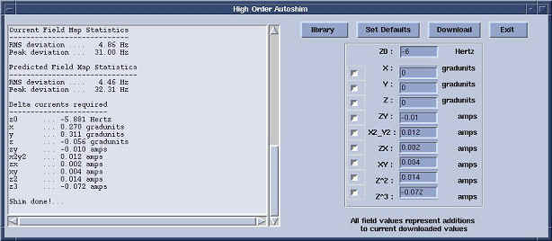

Illustration 5: BASIC SHIM USER INTERFACE AFTER CLICKING [CALCULATE SHIM]

Illustration 5: BASIC SHIM USER INTERFACE AFTER CLICKING [CALCULATE SHIM]
Illustration 6: ADVANCED SHIM USER INTERFACE

| NOTE: | The screen will display the Current RMS and Predicted RMS shim values shown on the Basic screen to compare to the next iteration. Look at the Shim current delta’s for each High Order Shim Channel. Convergence for these shim channels will be defined as asking for less than 30mA (0.03A) of current change. The User Interface displays units in Amps. |